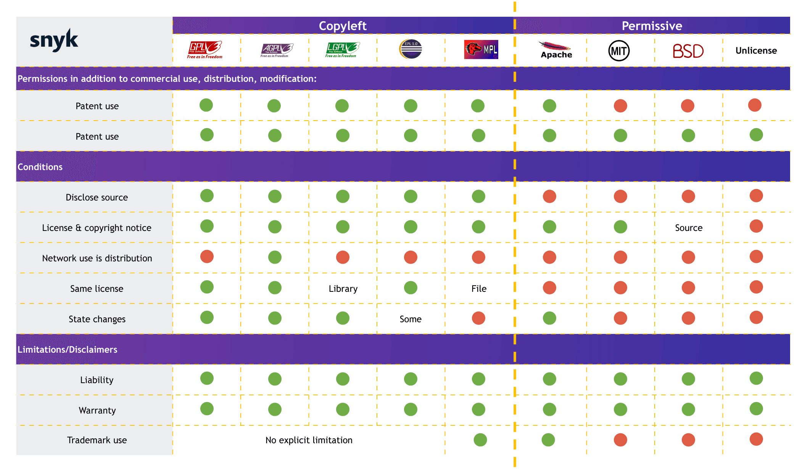

License Course
- Intangible Assets
- Theft
- Software Can't be stolen
- Internet
- Licenses and Business Models
- French Law
- Degradation
- Cyber War
- Issues with AI Models
- Making Money
- License Compliance Tooling
- Bibliography
Intangible Assets
- Intangibles, which can't be touched.
- No competition on products.
Theft
Theft is the fraudulent appropriation of another person's property. Penal Code Article 311-1
Wiktionary
Software Can't be stolen
- Software is an intangible asset.
Internet
- Allows a marginal technical cost:
e.g:
- Proliferation of e-commerce, e-learning, e-services.
Licenses and Business Models
Rights Holder
The author of an intellectual work enjoys, by the mere act of its creation, an exclusive incorporeal property right enforceable against all. Intellectual Property Code (article L111-1)
- The rights holder chooses the license.
- In a company, rights are transferred to the company (except for interns)
Proprietary Licenses
- Classic, closed, proprietary.
Shareware Licenses
- WinRAR
- Viral marketing
- No longer exists
- Difficulty at the time in reaching an audience
1 million use it and 100 pay == 1000 use it and 100 pay
Freeware
- Indirect monetization:
- Often used for services: SAAS
- If the service is free, you are the product.
Examples:
- Google Drive
- Discord
- Discord doesn't sell user data.
- Discord dilutes its shares.
Freemium
- Free at first and then encourage payment.
Examples:
- Pay to win
- Tinder
Open Source
- Free
- Can benefit from community support
- Internet allows marginal economic sharing cost
Copyleft
- Contagious
- A way to make software (or other works) free
Summary

Non-American Open Source Licenses
Some well-known licenses (MIT, BSD, Apache) are tied to American institutions. Alternatives exist:
- ISC — functionally equivalent to MIT, simpler wording
- EUPL — European Union Public License, copyleft, written under EU law, available in 23 languages
- CeCILL — French license (CEA/CNRS/INRIA), GPL-compatible
- CC0 — Public domain dedication (Creative Commons)
- Unlicense — Public domain, no conditions
- Zlib — Very permissive, no institution
Recommended Licenses
| Use case | License | Type |
|---|---|---|
| Library / small project | ISC or MIT | Permissive |
| Want contributions back | EUPL or MPL 2.0 | Weak copyleft |
| Maximum freedom protection | AGPLv3 | Strong copyleft |
| French context / public sector | CeCILL v2.1 or EUPL | Copyleft, EU/FR law |
| Documentation | CC BY-SA 4.0 | Creative Commons |
| Give up all rights | CC0 | Public domain |
- Prefer EUPL or CeCILL in French/European contexts: they are governed by EU law, not US law.
- MPL 2.0 is a good middle ground: file-level copyleft, compatible with proprietary code.
Economically
- Highly effective:
- Network effect:
- Viral
- Popular
- Devastates competition
- Chromium
- KDE
- Network effect:
French Law
Asymmetry
- Primacy of French law
- Patents are illegal in France
- Software patents are legal in Europe
EPO
- A hybrid organization
- No accountability
- No democratic control
- No legal oversight
- Changing the EU constitution would be required to reform the EPO.
- Anti-free software
- 3/4 of software patents granted by the EPO are held by non-European countries.
- Dicey
Patent Trolls
- Companies that exist solely to file lawsuits.
Useless Patents
- Useless patents:
- Double click: Microsoft, 2007
- One-click purchase: Amazon, 1999
- Hyperlink patent: IBM, 1998
- Window patent: Xerox, 1984
Primacy of US Law
- Entering the patent system means submitting to US law.
Hindrance to Innovation
- Anti-innovation
- Allows international firms to appropriate technologies
- Puts small and medium enterprises at a disadvantage against giants
- Innovation doesn't come from large corporations.
- Large corporations buy, fund, integrate
Degradation
The "Merdification" Pattern
A recurring trend: companies build products on open-source licenses, gain massive adoption, then switch to restrictive licenses once dominant.
Hashicorp Case (2023)
All Hashicorp software (Terraform, Vault, Consul, Nomad, Vagrant...) moved from MPL 2.0 to BUSL (Business Source License).
Redis (2024)
Redis moved from BSD to SSPL / RSALv2.
- Community response: Valkey (fork, Linux Foundation)
MongoDB (2018)
MongoDB moved from AGPL to SSPL (Server Side Public License).
- SSPL is so restrictive that OSI does not recognize it as open source.
- Community response: FerretDB (PostgreSQL-based alternative)
Elasticsearch (2021)
Elasticsearch moved from Apache 2.0 to SSPL / Elastic License v2.
- Community response: OpenSearch (fork, AWS / Linux Foundation)
CockroachDB (2019)
CockroachDB moved from Apache 2.0 to BSL.
Confluent / Kafka Tools (2019)
Confluent Platform components moved from Apache 2.0 to Confluent Community License.
- Kafka itself remains Apache 2.0 (ASF project).
Grafana, Loki, Tempo (2021)
Moved from Apache 2.0 to AGPLv3.
- AGPLv3 is still open source, but much more restrictive (copyleft on network use).
Docker Desktop (2021)
Docker Desktop moved from free to a paid subscription for enterprises (>250 employees).
- Alternative: Podman (Red Hat, fully open source)
Common Pattern
1. Build open source, gain adoption
2. Become the standard (network effect)
3. Change license to capture value
4. Community forks (sometimes)
- The BUSL and SSPL are not open source licenses (per OSI definition).
- They restrict cloud providers from offering the software as a service.
- The stated justification: "AWS/cloud providers profit without contributing back."
Monetization of Social and Symbolic Capital
Bourdieu:
- Economic capital
- Cultural capital
- Symbolic capital
- Social capital
Deterioration of public goods?
Cyber War
- A war has been won:
Free software dominates in all areas:
- Profitability
- Individual rights and freedoms
- Performance
But
- A new war is ongoing...
- A battle over cloud providers and, more generally, platforms.
- SAAS, a new tool for depriving freedoms.
Copyright law shows its limits on databases due to artificial intelligence:
- Freeing models
- Risks of privatization
- Risk of theft
Issues with AI Models
ChatGPT === Wikipedia + Reddit + Twitter + Marmiton + ...
The problem with recommendation algorithms:
- Cambridge Analytica
- QAnon
- X
- etc...
Tools that are:
- Opaque
- Non-democratic
- Uncontrolled
- Built on unclear data usage.
Making Money
- It's possible to build an open-source company, and it even has several advantages:
- Psychological support from the community.
- Regional support
- Forces better product design
- Easier recruitment
License Compliance Tooling
The REUSE Standard (FSFE)
REUSE makes licensing easy and machine-readable:
- Add SPDX headers to every file (
SPDX-License-Identifier: MIT) - Store full license texts in a
LICENSES/directory - Lint compliance with
reuse lint - Generate SBOM with
reuse spdx
pip install reuse
reuse download MIT EUPL-1.2
reuse annotate --license MIT --copyright "Your Name" src/*.py
reuse lint
- Integrates into CI/CD with the
fsfe/reuseDocker image.
SBOM Generation
A Software Bill of Materials (SBOM) lists all components and their licenses.
Required by US Executive Order 14028, and EU Cyber Resilience Act (2027).
| Tool | What it does | Format |
|---|---|---|
| Syft | SBOM generator from images, filesystems, archives | CycloneDX, SPDX |
| Trivy | Vulnerability scanner + SBOM generation | CycloneDX, SPDX |
| CycloneDX CLI | SBOM creation and conversion | CycloneDX |
# Generate SBOM from a container image
syft myimage:latest -o spdx-json > sbom.json
License Auditing
| Tool | What it does |
|---|---|
| ScanCode Toolkit | Deep license & copyright detection by scanning source code |
| ORT (OSS Review Toolkit) | Full compliance pipeline: analyze, scan, evaluate policies, report (Linux Foundation) |
| OWASP Dependency-Track | Continuous SBOM analysis platform, identifies license & vulnerability risks |
| FOSSA | Commercial license compliance (free tier available) |
License File Generators
For bootstrapping a project with the right license file:
| Tool | Language |
|---|---|
| reuse download | Python (recommended) |
| license | Go |
| license-generator | Go |
Recommended Workflow
1. Choose license (EUPL, MIT, AGPLv3...)
2. Add SPDX headers to all files (reuse annotate)
3. Generate SBOM in CI (syft / trivy)
4. Audit dependencies licenses (scancode / ORT)
5. Lint compliance (reuse lint)
Bibliography
- https://fr.wiktionary.org/wiki/soustraction
- https://opentf.org/
- https://fr.wikipedia.org/wiki/Bien_immatériel
- Intellectual Property Code:
- Penal Code: